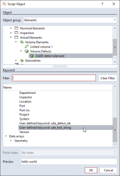
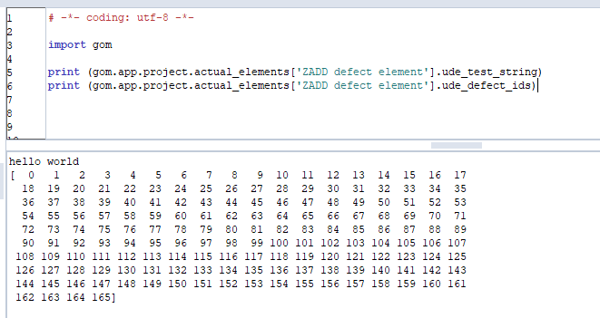

Tokens on scripted elements
Note
This section assumes that you are familiar with the basic concept of Scripted elements. If not, take a look at the Introduction, Scripted actuals and Scripted checks sections.
Introduction
This page describes how user-defined tokens can be set to user-defined elements (UDEs).
Instructions
How user-defined tokens are set
In the calculation function that generated the results, the context.data[] field can be read and written.
In the following example, a volume defects element was created with following snippet inside the calculation() function:
# Simulating user-defined token data
ids = np.array ([ i for i in range (166) ])
for s in context.stages:
context.data[s] = { "ude_defect_ids" : ids, "ude_test_string" : "hello world" }
Generally, the context.data[] field can be used to store intermediate data between the dialog() and the calc() function, e.g. if you – for preview reasons – pre-calculated some values, you can reuse them in the calc() function.
Starting with SW2021 (Final) however, if you set the context.data[s] to hold a Python dictionary – i.e. a key-value map – for each stage s, then this data will be interpreted as ‘token’ data. These are generally data entities set to a GOM element, which can be retrieved using a key-string (the token).
With this user-defined token mechanism, you are free to set any data structure as token data to the element you are creating as UDE, as long as it is serializable by the GOM scripting framework. You can use therefore: basic Python data types, numpy arrays, the GOM data types such as GOM.Vec3D, and finally lists and dictionaries of the previously mentioned types.
In the example given above, we create a numpy array with IDs, one for each defect, and set this together with an exemplary test string as token data to the element.
Note
Note: Naming of user-defined tokens
⚠️ The keys in the key-value map of user-defined tokens must start with the prefix ude_. If this is not the case, the token will not be set.
Usage of user-defined tokens in scripts
Let’s see how this data can be retrieved after the element was successfully created:
Open the script editor and create a new script. In the new script, press “F2” or right-click → Insert → Element Value.
In the appearing dialog, search for the volume defects element, and you will find the user-defined data in the “User-defined keywords” section.

For simple data types, you will get a preview (see Screenshot). For more complex types, including numpy arrays, there is no preview. The further usage works nevertheless.
If you click “OK”, the syntax how to retrieve the data is inserted in your new script. Of course, it is also possible to obtain the data from the element, if you have got a reference to it in a dialog selector or similar.
You can now use the data in follow-up scripts.

Usage in user-defined checks
Just as all other tokens on the element, you can access the data in user-defined checks.
For simple data types, this is straightforward. To make this work for indexed data, as in the example of “defect_ids”, you have to make sure that the array data you set to the token has the same length as the indices of the element.
In the example above, the defect element gets 166 meshes, which will result in indices from 0 to 165.